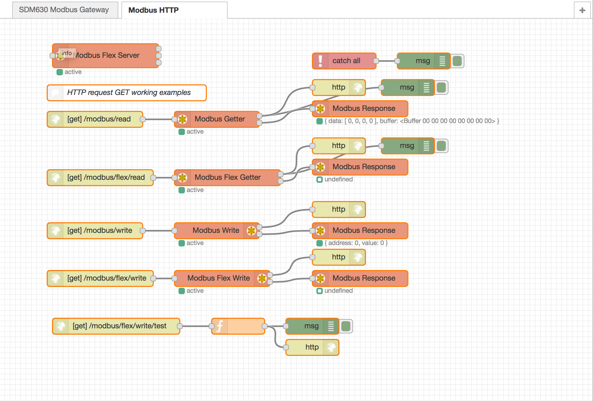

node-red-contrib-modbus
The all in one Modbus TCP and Serial contribution package for Node-RED.

Node-RED contribution package for Modbus
Based on modbus-serial with TCP, C701, Telnet, Serial, RTU buffered, and ASCII
- stress tested with Node-RED v0.19 and Node.js v9 and v10 LTS
- works with queueing per unit and round robin scheduling
- Node.JS 8.x is supported with v3.x
- Node.JS 6.x is supported with v2.x
- Node.JS 4.x is supported with v1.x
If you like that contributor's package for Modbus, then please give us your star at GitHub !
You could help as a backer of the project.
Install
Run the following command in the root directory of your Node-RED install
npm install node-red-contrib-modbusRun the following command for global install
npm install -g node-red-contrib-modbustry these options on npm install to build, if you have problems to install
--unsafe-perm --build-from-sourcemodbus-serial, serialport and jsmodbus
The serialport optional dependency is just to list all ports on your system in the client configuration. It is not the serialport version to work with Modbus at runtime. For that check the modbus-serial or jsmodbus package.json, please! The modbus-serial supports and works for TCP connections in that package, too. The jsmodbus package is just to provide a simple Modbus Server node. All Modbus commands running on modbus-serial.
TCP or Serial testing
If you get in trouble with TCP connections, then check and test with just modbus-serial first, please!
If you get in trouble with Serial connections, then check with just serialport first, please!
Update/Upgrade/Downgrade
To update the dependencies or the whole package, you have just to install again.
npm show node-red-contrib-modbus@* versionTo get a special version please set the version with @M.M.F:
npm install node-red-contrib-modbus@3.6.1or global by
npm install -g node-red-contrib-modbus@3.6.1How to use
- see Wiki pages
- use the Flow example to see how it works ...
- see YouTube Playlist

Debug
Debug will be activated by starting Node-RED with debug mode:
DEBUG=contribModbus*,modbus-serial node-red -v
or
DEBUG=contribModbus:{option},contribModbus:{option},...Options
- core
- core:client
- core:client:fsm
- io
- io:core
- basics
- read
- write
- server
- response
- flex
- flex:getter
- flex:write
- flex:connector
- flex:server
- modbus-serial
see Wiki pages to get more options in detail
Contributing
Let's work together! Please read and in best case accept CONTRIBUTING by your sign and send it via E-Mail. You could also send just a pull request or issues while testing, please!
Click here if you want to back the project!
Authors
since April 2016 by Klaus Landsdorf
History
- contribution in 2016 by iurly
- license changed in 2016 by Jason D. Harper
- started in early 2015 by Mika Karaila